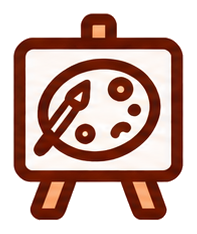

The Museum of Imperfect Creativity
“不完美创作博物馆” 交互式线上展馆 — 技术说明文档
OVERVIEW
The Museum of “Imperfect” Creativity（不完美创作博物馆）是一件以“人机共创中的不完美性”为主题的交互式线上展馆作品。项目针对同一题材并置呈现三类诠释——一组 AI 生成图像与两组人类绘画作品——引导观众在观看、动手、反思的连续动线中，重新审视“完成度”与“创造力”之间的边界。
作品采用单页应用（SPA）形态组织全部内容：展厅、创作工作室、反思表单与对比结果均位于同一文档内，通过视图状态切换串联，全程无页面跳转、无外部网络请求。工程严格遵循零依赖（zero-dependency）与零构建（no-build）原则，源码即最终产物，不经过任何打包、转译或依赖安装环节，任意现代浏览器双击即可运行。
核心动线 / USER JOURNEY
- 浏览 — 沿一条纵深轨道逐件推进，一次只陈列一件作品。每件作品由「远墙组名 / 裱纸 / 画框 / 展签牌」四层纸片叠成，镜头在纵深里推拉；换场时一张撕纸横掠而过，下一件已经在纸背后站好。
- 转场 — 点击进度条末端图标触发全屏转场视频，播放完毕后无缝切入创作工作室，形成空间上的连续过渡。
- 创作 — 在陶片碎片底图上以铅笔／橡皮自由涂画，笔迹与底图分层隔离，可随时导出为 PNG 图片。
- 反思 — 通过反思表单选择影响设计取向的因素、补充文字说明，并可选上传参考图片。
- 对照 — 提交后与两个 AI 版本并置对比，完成一次“人类 / 机器”诠释的对照闭环。
TECHNOLOGY
01 · 总体架构 / ARCHITECTURE
整个项目不引入任何框架、UI 组件库或第三方脚本，全部功能以浏览器原生 API 实现。工程按职责划分为四层，彼此单向依赖、边界清晰：
- 结构层（index.html） — 定义两个页面级容器
#page-gallery与#page-detail、两个模态弹窗及转场视频节点；动态内容留空，统一由脚本注入，保证结构层与数据解耦。 - 表现层（style.css） — 承载主题变量、版面布局、状态样式与响应式断点。视图切换仅通过容器上的
is-active状态类控制显隐，不做 DOM 增删，从而规避反复重排带来的性能损耗。 - 逻辑层（script.js） — 承担数据建模、3D 舞台的逐帧景深与视差计算、指针交互、画布绘制与弹窗状态机等全部行为逻辑。
- 资源层（shard-data.js） — 以 Base64 数据 URI 内联方式承载碎片底图，用于规避本地协议下的画布跨域限制（详见第 05 节）。
工程文件构成 / FILE MANIFEST
| index.html | 结构骨架：两个页面级容器、两个模态弹窗与转场视频节点 |
|---|---|
| style.css | 全部样式：主题变量、版面布局、交互状态与响应式断点 |
| script.js | 全部逻辑：3D 舞台景深与视差、指针交互、画布绘制与弹窗状态机 |
| particles.js | 展厅氛围粒子：远景光斑 / 浮尘 / 星芒 / 换场冷尘爆发，纯 canvas 绘制，不吃点击。顶部有总开关 INTENSITY（当前 0.76，1.0 为原始强度）统一控制浓度 |
| shard-data.js | Base64 内联的陶片底图资源（约 170KB） |
| image/ | 作品图像与图标素材，共 20 项；image/trim/ 另存 4 张裁掉烘焙暗边的副本 |
| transition.mp4 | 展厅至工作室的转场动画视频。画面自带一层烘焙进去的粉色水彩纸底，无法重出，播放时用 --video-hue: hue-rotate(-125deg) saturate(0.72) 把它转到与页面纸同一个蓝（角度是按页面纸实测色反解的，页面纸改色则需重新量） |
02 · 3D 舞台与多层平面 / 3D STAGE
展厅不是一张贴在屏幕上的平面图，而是一间用 CSS 3D 搭出来的房间：舞台 .stage 上写死 perspective: 900px 充当镜头焦距，摄影机沿 Z 轴推进。每件作品由四张景深不同的纸片叠成，放大倍率完全交给浏览器的透视除法（m = P / (P − z)）计算，脚本不手写任何 scale —— 于是同一件作品内部的前后两层会以不同速率掠过，这才是立体感的真正来源。
| 景深映射 | z = FOCUS_Z − away · SPACING，away = 作品序号 − 镜头位置 |
|---|---|
| 远墙组名 | translateZ(−380px)，视差系数 +190：章节标题挂在最远的一层 |
| 裱纸 | translateZ(−150px)：画框背后那张牛皮纸，朝上左错开，露出一圈撕边 |
| 画框（对焦平面） | translateZ(0) + rotateY(−8deg)：左右两条竖边不等长，一眼就是插在空间里的一块板 |
| 展签牌（前景） | translateZ(+150px) + rotateY(−17deg)，视差系数 −330，与画框反向甩开 |
| 前景剪影层 | 天花横梁 / 左右门柱 / 地台 / 前排碎片剪影，永远压在展品之前 |
| 展墙 | 与页面同一张水彩纸压暗一档：.room 铺纹理、.room-wall 只叠一层半透明蓝墨（不透明底色会把纹理整个盖死）；天花光锥上窄下宽，是整场最省的「空间透视」线索 |
纵深不靠模糊，靠四件事：硬边分层（每张纸都有自己的轮廓）、投影（画框用「12px 硬投影 = 纸片厚度」叠「26px 软投影 = 离墙多远」，两层缺一不可）、遮挡（前排碎片剪影咬住画框左下角）、视差（同一件作品内部各层以不同速率横移）。换场时一张撕纸横掠过去把交接整块盖住 —— 那是遮挡，不是虚化。
关键参数：透视焦距 PERSP = 900，相邻作品间距 SPACING = 1000，横向让开 SWEEP = 430px，近端剔除 NEAR_CULL = 620。撕纸宽 210%、行程 −120% → 120%，在进度 35%~50% 之间完全盖住舞台（按 getBoundingClientRect() 实测：40% 时覆盖率 1.000，50% 时纸已离场）；镜头正好在 50% 处穿过中点，于是「换掉」这件事发生在纸背后。
03 · 交互与动画 / INTERACTION & ANIMATION
- 指针交互统一化 — 拖动、滚轮、点击与进度条拖拽均基于 Pointer Events（
pointerdown / pointermove / pointerup）实现，并配合setPointerCapture锁定指针，使鼠标、触控与手写笔在同一套逻辑下工作；拖动位移小于 5px 时判定为点击，有效避免误触。 - 缓动吸附 — 松手或滚轮停止后，以
requestAnimationFrame驱动缓动动画（每帧向目标插值 15%）自动停靠至最近作品，动画进行中会取消上一帧请求，保证任意时刻只有一条动画链路；滚轮停止判定采用 150ms 防抖，使连续滚动不被中断。 - 进度条同步 — 手绘波浪进度条基于 SVG 路径实现：先以
getTotalLength()取得路径总长，通过stroke-dasharray / stroke-dashoffset控制已浏览比例，再以getPointAtLength()将小手图标精确定位到当前进度点，实现进度与画面严格同步。 - 反向拖动控制 — 小手本身亦可拖动以反向浏览。由于路径在水平方向单调，脚本预采样 200 个点位构成查找表，拖动时用
DOMPoint结合getScreenCTM().inverse()将屏幕坐标换算为 SVG 坐标后取最近点，实现精确且低开销的双向控制。
04 · 双画布分层 / CANVAS LAYERING
创作工作室使用两块 1200 × 800 的 <canvas> 上下叠放，构成“底图 / 笔迹”物理隔离的双层结构：底层 #baseCanvas 绘制白纸与陶片碎片底图（按画布高度 80% 等比居中），上层 #drawCanvas 仅记录用户笔迹。该设计带来三项工程收益：
- 非破坏性擦除 — 橡皮采用
destination-out合成模式，仅擦除上层笔迹而不触及底图；铅笔则以source-over正常叠加。两者通过切换globalCompositeOperation实现，无需重绘底图，切换开销极低。 - 无损导出 — 导出时新建离屏画布依次合成底图与笔迹，经
toDataURL('image/png')输出并触发下载，保证导出结果与所见画面完全一致。 - 坐标一致性 — 指针坐标经
getBoundingClientRect()换算为画布内部像素坐标，使绘制精度不受 CSS 缩放影响，笔触落点与光标位置严格对齐。
05 · 素材内联与跨域策略 / ASSET INLINING
陶片底图并未以独立图片文件引用，而是以 Base64 形式内联于 shard-data.js。这一处理针对的是 file:// 本地协议下的浏览器安全策略：当画布绘制了跨源图片后会被标记为“受污染（tainted canvas）”，此后调用 toDataURL() 将抛出安全异常，导致用户无法导出作品。将图片以数据 URI 内联后即视为同源，从而在“零依赖、双击即用”的约束下完整保留导出能力。
该策略的取舍：以约 170KB 的脚本体积换取离线可用性与导出功能；对本地展馆类应用而言，这一权衡的收益明显大于成本。
06 · 响应式适配 / RESPONSIVE
展厅以 ResizeObserver 监听舞台尺寸变化，按「展品最多占展区宽度 76%、高度 78%」反解出对焦平面的 z 值（FOCUS_Z），使作品在不同分辨率下保持一致的视觉占比，同时避免展签挤到标题或底部控件上。样式层另设 720px 断点，在窄屏下将色板由九列降为三列、字号标尺由双列降为单列，保证小屏可读性。
07 · 无障碍与可用性 / ACCESSIBILITY
- 全部图标按钮均标注
aria-label与title；工具切换按钮同步维护aria-pressed状态，供屏幕阅读器准确播报当前选中工具。 - 装饰性图形（波浪进度条、云朵选项轮廓）统一标注
aria-hidden，避免冗余朗读；内容图片均提供语义化alt描述。 - 云朵选项卡片的轮廓由脚本按圆弧分段程序化生成（
cloudPath()），在保留手绘观感的同时维持矢量清晰度与无损缩放能力。
DESIGN SPEC
COLORS
色板由深到浅构成层级：墨色承担全部文字与描边，水彩蓝负责主色与容器底色；暖色的木质画框、牛皮纸裱纸与米纸卡面压在冷色展墙上，前后对比就出来了。背景是一张蓝色水彩纸 —— background.png 用 background-blend-mode: luminosity 只换色相、不动纹理；但纹理的明度决定了最终亮度，单改 --paper 的明度不起作用，所以纸面还要叠一层 --wash 深蓝水洗来定调。水洗层带 fixed，页面纸、展墙、画布页三块背景才落在同一个坐标系里，读成同一张纸。
BUTTON




图标按钮 72 × 72px，圆角 16px，描边 2px，内边距 10px；说明文字统一 13px / 粗体 / 行高 1.4，全大写。按钮底色为米纸白 #F7F3EA，悬停转 #ECE6DA，选中的工具另加 4px 硬阴影上浮；投稿按钮不套外框，由图标自带的圆角方框充当按钮外形。本页仅展示图标本身，不铺底色。
TYPE SCALE
页面主标题 #2B2222
展区分组标签 #2B2222
胶囊按钮 · 表单正文 #2B2222
按钮说明文字 #2B2222
卡片元信息 #2B2222 · 70%
胶囊按钮高 46px、圆角 999px、左右内边距 26px；圆角体系另有 32px（弹窗）、16px（图标按钮）、14px（输入框）、4px（相框）。